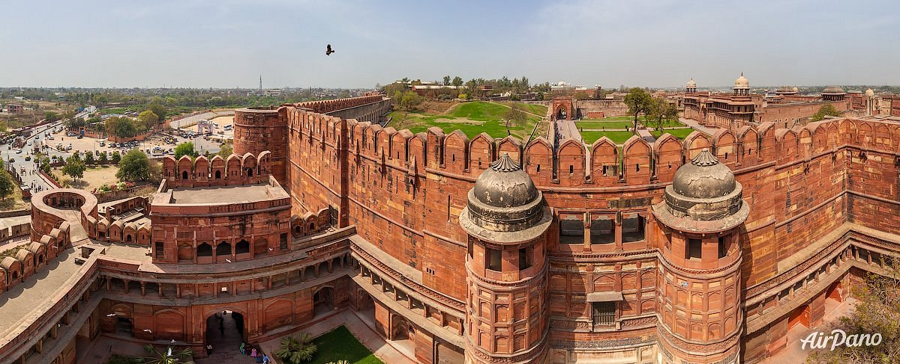
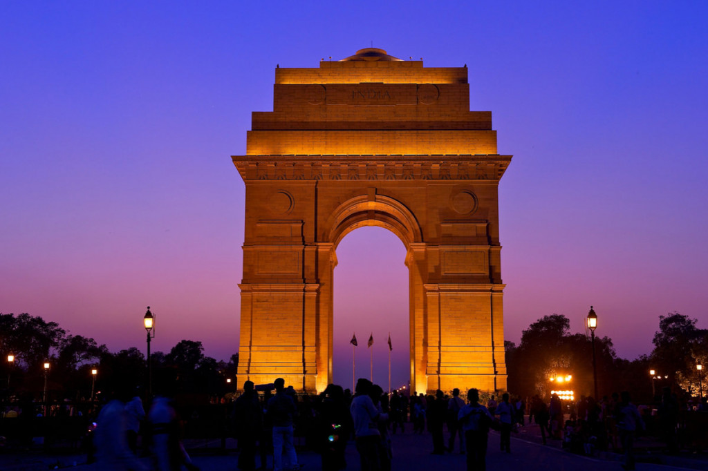
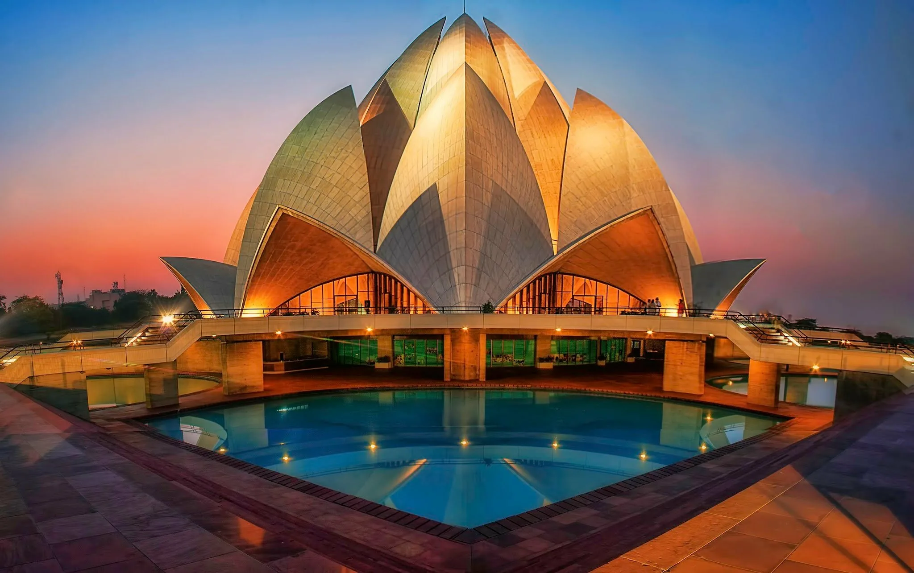

Откройте Нью-Дели с ТурАтласом!
Погрузитесь в волшебство индийской столицы — древние храмы, пестрые базары, современные отели и незабываемая кухня ждут вас!



Популярные места
- Красный форт: Имперская крепость XVI века.
- Индийские ворота: Мемориал с живописным парком вокруг.
- Кутб-Минар: Минарет 73 метра в высоту.
- Храм Лотоса: Символ единства религий.
Туристические маршруты
🕌 Классический Дели (1 день)
Посещение Красного форта, Джама Масджид, Индийских ворот и вечер на рынке Чандни Чоук.
Цена: от 12000 ₸
🌸 Храмы и духовность (2 дня)
Экскурсия по Храму Лотоса, Акшардхам и храму Ханумана. Медитация и ужин в ведическом кафе.
Цена: от 21000 ₸
🏨 Люкс-тур + отдых (3 дня)
Проживание в 5★ отеле + гид + шоппинг в Connaught Place + спа и культурная программа.
Цена: от 45000 ₸
Лучшие отели Нью-Дели
- The Imperial: Историческая роскошь в самом центре.
- Taj Mahal Hotel: Известный отель с потрясающим сервисом.
- Bloomrooms: Бюджетный, но стильный выбор для путешественников.